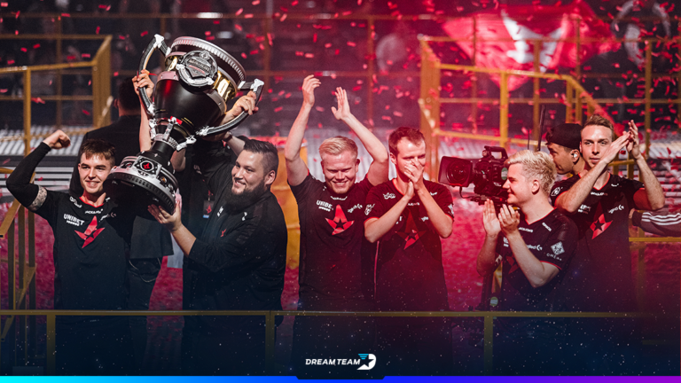

Árið 2012 kom út nýjasta útgáfa leiksins: Counter-Strike: Global Offensive (CS:GO), frá útgáfudegi og sífellt þangað til í dag hefur leikurinn verið í Topp 5 mest spiluðu tölvuleikjum í heimi.
Counter-Strike: Global Offensive er nú þegar og verður sennilega langlifaðasta útgáfa Counter-Strike seríunar, aðalega útaf hvernig leikir virka í dag. Áður fyrr þurftu leikjahönnuðir að framleiða sífellt nýja leiki til að græða peninga, en núna eru mun fleiri leiðir til að græða á tölvuleikjum, við förum ekki útí hvað CS:GO gerir, en vegna valkostinn að geta sífellt uppfært og breytt leikina smátt og smátt í stað þess að gefa út heilann nýjann leik gerir það að verkum að þótt leikurinn sé orðinn næstum átta ára gamall virkar hann ennþá mjög vel og ValvE fer með mjög gott viðhald um hann, og er sífellt að uppfæra, breyta og bæta!
Counter-Strike: Global Offensive er í dag ein vinsælasta og verðmætasta rafíþrótt í heimi, stærstu mótin (sem nefnast "Majors") fá reglulega hálfa milljón og uppí milljónirnar áhorfendur á netinu og tug-þúsundir sem fylla upp salina sem mótin eru haldin í. Auk þess vinna sigurvegarar mótanna hátt í $1.000.000 dollara.
